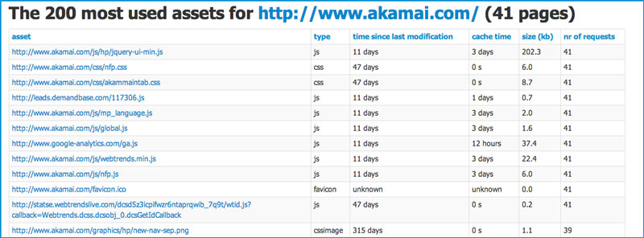
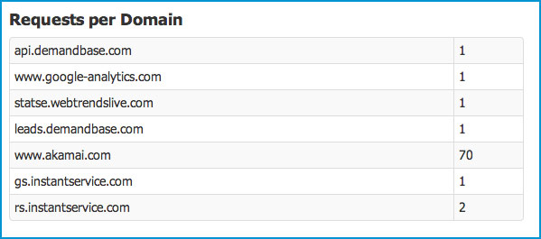

Wow, I really like this feature :) The idea was adopted from Steve Souders of functionality that's missing in the webperf tools that exist today. It is actually three functions:
The asset marked in red was last changed 315 days ago, but the cache time is 0s. That's not good.
You will also see a summary of all assets on an individual page, of the average time since last modification and the cache time.
On the summary page, you will get the same information but for the whole site. In this example, the average cache time is 10 days (and the median is 0 seconds). The average time since last modification for all assets are 321 days (and the median 189). You will gain a lot if you change the cache headers for this site :)
Introducing a new brand thing: see which assets are used the most across the analyzed pages. Thanks Tobias Lidskog for the great idea! Here you will see the most (max 200) assets, and how many times they are used. This will give you a hint on which assets you will win the most to fine tune.
The SPOF rule now only report font face that are loaded from another top level domain (that seems more reasonable than report all font face files). Also the actual font file is reported (before only the css that included the font-face).
Summarize the requests by domain, so you easy can see how the requests are sharded between domains. Every webperf tool has it, now also sitespeed.
Now it is possible to add a parameter to the script to choose which ruleset or which Yslow file to use. This has two great wins: If you clone your own version, you can test your own rules without changing the main script. It also makes it more flexible in the future, opening up for multiple rulesets & rule implementations
No rules attached to this yet, this is more if informational data. How much time do your site spend in backend & in frontend? You will see the information both on each individual page and on the summary page (the new blue informational color).
Yslow has been upgraded with better error handling of faulty javascripts.
The Java code used by sitespeed is now compiled for Java 1.6, so 1.7 is no longer the requirement.
See the changelog for changes done in the past and the next milestone what will come in the next release.